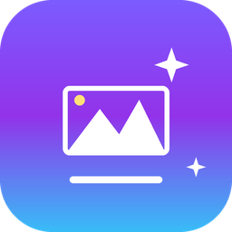

一个装在自己电脑上的 AI 生图小工具。写一句中文，点生成，图就出来了。
PicPop 调用公司 Model 助手提供的生图模型，界面完全在你自己的电脑上运行。 提示词和图片都不会上传，生成的图直接存到你选好的文件夹。
模型会持续跟进。Model 助手上线新的生图模型后，在「设置 → AI 模型」里填上 接口地址、模型名和自己的 Key 就能用，不需要等 PicPop 更新版本。
| 模型 | 出图尺寸 | 主要短板 | 什么时候用它 |
|---|---|---|---|
| Seedream 4.5 豆包 默认首选 | 2K 约 2048×2048 | 没有明显短板，四个里最稳 | 不知道选哪个就用它。日常出图、对尺寸准确度有要求时优先选这个 |
| Seedream 5.0 Lite 豆包 | 2K 实际 2848×1600 | 输出不是正方形，比例会偏离你选的；程序要再缩放一次，细节略有损失 | 想要更多画面细节，且对长宽比要求不严时 |
| Gemini 3 Pro Image Google | 原生约 1408×768 | 公司网关不接受尺寸参数，只能把比例写进提示词去「商量」，出图不保证像素级一致；速度较慢（18–23 秒） | 重视画质和创意感、尺寸可以事后缩放时 |
| Gemini 3.1 Flash Image Google | 约 1024×1024 / 1376×768 | 和上一个同样的尺寸限制，原生分辨率也更低，放大后容易发糊 | 快速试效果、只看构图和创意时 |
第一次使用需要填自己的 API Key：右上角 ⚙ →「AI 模型」。Key 只保存在你自己的电脑上。
分享版不含任何人的 Key，四个模型一开始都显示「待填 Key」，这是正常的。 安装包稍后上传到 Releases 页面。